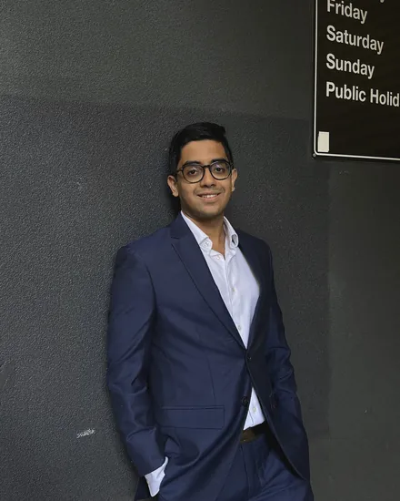

Our mission
Enabling growth & trust for supply chains
As global manufacturers expand into emerging markets, moving production is only the beginning. Local suppliers need capital to meet rising demand. Banks need confidence to finance them. Manufacturers need clarity on the risks behind their supply chains. Gaps in information and trust can hold back the entire network.
We are building supply-chain intelligence to bring these needs together: making risk clearer, strengthening trust and enabling access to working capital. Our purpose is to help MSMEs take on larger opportunities and help manufacturers expand with confidence.
Team
Founders
Obsession with geo-politics, innovation regulation and global value chains brought him to a foundational problem in globalisation. Current systems, AI or not, struggle to address complex supply chain issues.
Having been trained across six legal jurisdictions, AI policy and delegations across various UN bodies, Sreenath wants to fix the structural plumbing problem plaguing global trade and finance. Kanan is the vehicle in achieving that goal.
Lakshana leads Kanan’s work on cognitive architecture, research and decision intelligence for complex global supply chains.
She is trained across neuroAI, computational modelling and information theory, with her work centring on how intelligent systems learn and make decisions under uncertainty. At Kanan, she applies that foundation to build systems that reason across interconnected risks to deeply understand supply-chain environments.
Careers
The hard problems are still ahead.
We work where evidence, law and manufacturing meet, and much of what we build has not been built before. If you want to do careful work on problems that matter, we would like to hear from you.
See open rolesFrequently asked
Questions about Drona.
What is Drona, and what decisions does it help manufacturers make?
Drona is a production-intelligence system for manufacturers with order-driven supply chains.
It helps teams determine whether a specific order can be produced and delivered on time, which dependencies require attention, and what action remains available when conditions change. The assessment is built around the actual commitment—not a permanent or generic supplier score.
How does Drona determine whether a production order can be completed and delivered on time?
Drona begins with the order and works through the components, suppliers, production stages, materials and external dependencies required to fulfil it.
It establishes what must remain true for the order to succeed, what could break those conditions, and what evidence would change the assessment. This creates an order-specific view of production reliability and helps teams concentrate attention where it can still affect the outcome.
How does Drona identify the suppliers and dependencies that matter most to an order?
Drona does not begin by trying to map everything. It works with the manufacturer to identify the components and commitments whose failure would materially affect production or delivery.
It then traces the suppliers, facilities, materials, processes and sub-tier relationships behind them. Factors such as consequence, substitutability, lead time, concentration and the time remaining to respond help determine what is critical.
How far into the supply chain does Drona look?
As far as the decision requires.
Drona looks beyond Tier 1 when a lower-tier material, processor, facility, route or single-source dependency can control the outcome of an order. Broader network mapping can deepen over time, but critical dependencies come first. The objective is decision-useful visibility—not completeness for its own sake.
What risks does Drona monitor, and when does a signal become relevant to an order?
Drona can monitor financial, commodity, geopolitical, regulatory, logistics, climate and location-specific risks.
It does not treat every external event as an alert. A warning becomes relevant when it connects to a real dependency, could materially affect production or delivery, can be tested against available evidence, and reaches the team while a useful response is still possible.
What happens after Drona identifies a risk? Can it work directly with the supplier?
Yes—with the manufacturer’s approval.
Drona can recommend a proportionate response, such as requesting additional evidence, securing an input earlier, escalating a production milestone or opening a working-capital pathway. It can then contact the relevant supplier through email, messaging or voice to explain the concern and coordinate the next step.
The manufacturer retains control over external communication and final action. The supplier retains responsibility for its operational decisions.
How can working-capital access reduce the risk of supplier disruption?
A viable order can still fail when a supplier cannot fund the materials or production activity required to complete it.
Drona connects a finance request to the underlying order, production requirements, milestones and relevant risks. This gives the financier a clearer evidence package and gives the manufacturer an earlier opportunity to address a cash constraint before it becomes a production delay.
Kanan does not lend, guarantee approval or make the credit decision. The regulated financier does.
Can Drona explain every assessment and show the evidence behind it?
That is a core design requirement.
Every material assessment is intended to remain connected to its supporting evidence, the dependency being evaluated, the reasoning applied and the uncertainty that remains. Where the evidence is insufficient, Drona should surface the gap or request review—not manufacture certainty.
AI can assist with analysis and coordination. It does not replace evidence, accountability or human authority.
How does Drona fit into our existing systems, teams and supplier relationships?
Drona is designed to work alongside existing procurement, ERP, supplier, quality and finance workflows—not replace them.
A deployment can begin with one bounded order and an agreed set of documents, supplier records and production evidence. Suppliers can be engaged through familiar channels, while internal teams retain their existing responsibilities and approval rights. Integration can deepen where it reduces work and improves the quality of the decision.
Where is Drona today, and what does a design partnership involve?
Drona is currently in the design-partner phase.
Kanan has a defined product thesis and operating model. Its performance, integrations and production-stage logic must now be tested against real manufacturing conditions.
A design partnership typically begins with a bounded live or shadow-live order, agreed data boundaries and clear success measures. Kanan and the manufacturer then review what became knowable, when it became actionable and whether the assessment improved the response. It is a structured product-validation engagement—not an open-ended consulting exercise.